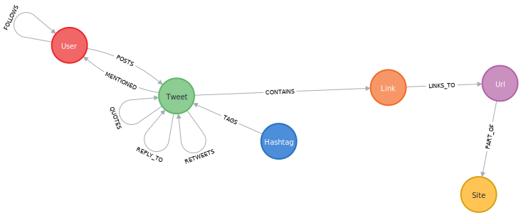

Physical Datamodel
This section describes the datamodel as it exists in the database, this can differ from the logical datamodel the application is using in the service layer. This section assumes the data is stored in a Neo4j database and hence uses the property graph model.
There are currently no known ways to generate a graphical representation of a graph property model via plantuml or similar available tooling, so the image is generated in the Neo4j browser with call db.schema.visualization and manually downloaded. Other ways of visualising the data model is by using tools as Arrows app or yEd. It is recommended to store the source files from these tools to allow adjustments for the data model.
|
1. Overview
For demo purposes, the datamodel from the Twitter-Crawler. This application allows to crawl the social graph from a given starting point and stores the result in a Neo4j database. Entities in this graph represent part of the Twitter social network.

2. Nodes
2.1. User
Nodes with the label User represent accounts of users of the twitter service. User can post tweets, follow other users to see updates of their tweets and respond to tweets.
| Attribute name | Data Format | Description | Unique | Index |
|---|---|---|---|---|
id |
String |
twitters internal id |
X |
X |
screenName |
String |
unmodifiable twitter id (the part behind the @) |
X |
|
name |
String |
Display name |
||
description |
String |
user provided description from their profile |
X |
|
lastScanned |
LocalDateTime |
time the user data was last updated by the crawler |
||
createdAt |
LocalDateTime |
time the user was first encountered and created in the database |
||
location |
String |
location string as provided by the user in their profile |
||
verified |
Boolean |
If the user identity has been verified by Twitter |
||
tweetCount |
Number |
Number of tweets as reported by Twitter. This might differ from the number of connected :Tweet nodes as Twitter limits the number of loadable tweets |
||
weight |
Float |
as calculated by GDS page rank algorithm |
3. Relationships
3.1. FOLLOWS
Describes that a User choose to receive updates (tweets) of another User.
| Attribute name | Data Format | Description | Unique | Index |
|---|---|---|---|---|
interactions |
Number |
Number of times the source user interacted with the destination user. Calculated as part of the DS pipeline |